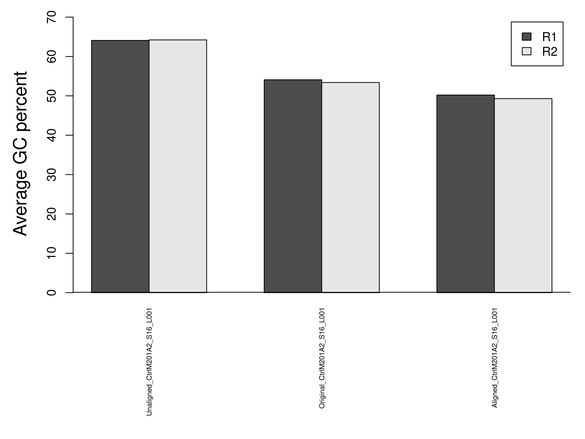

Summary of FastQC reports
Jim Zhang
2021-12-13
Introduction This analysis compares a set of high-throughput sequencing libraries based on their FastQC reports. Please refer to the original FastQC documentation for details about FastQC statistics. This analysis only requires the fastqc.zip file generated by each FastQC run and don’t use the original .fastq or .bam file.
FastQC aims to provide a simple way to do some quality control checks on raw sequence data coming from high throughput sequencing pipelines. It provides a modular set of analyses which you can use to give a quick impression of whether your data has any problems of which you should be aware before doing any further analysis. The main functions of FastQC are
- Import of data from BAM, SAM or FastQ files (any variant)
- Providing a quick overview to tell you in which areas there may be problems
- Summary graphs and tables to quickly assess your data
- Export of results to an HTML based permanent report
- Offline operation to allow automated generation of reports without running the interactive application
1 Description
1.1 Project
Compare the transcriptomes of early embryos of lean and obese mice.
1.2 Experiment
Prepare RNA-seq libraries using Clontech’s Low Input SMARTer® Stranded RNA-Seq Kit and did a paired-end 2x75bp NextSeq run.
1.3 Analysis
Diagnosis of RNA-seq libaries with low alignment rate. The sequencing reads of this data set have low alignment rate (TopHat~=50% STAR~=65%). One pair of .fastq files, CtrlM201A2_S16_L001, with ~12 million reads were selected for diagnosis purpose. Each of the original .fastq files were split into 2 files with just aligned and unaligned reads according to STAR alignment result. This analysis compares the FastQC reports of the original, aligned, and unaligned fastq files.
2 Summary statistics
Summary statistics were compared across libraries. Inconsistence of a statistics might indicate quality issues of some libraries.
2.1 Quick evaluation
FastQC makes a quick evaluation on each summary statistic whether it is entirely normal (green), slightly abnormal (orange) or abnormal (red). The figure below compiles the evaluation results of all summary statistics from all libraries.
Figure 1. The summary statistics are color-coded (green=normal, orange=slightly abnormal, and red=abnormal). Please refer to FastQC manual for intepretation of each statistic.
2.2 Total reads

Figure 2. The distribution of library size (number of total reads). One pair of paired reads is counted as one read.
2.3 Paired read correlation
Compare the consistency of several key summary statistics between paired sequence reads. Strong agreement between pairs is expected.
Figure 3. These plots compare the summary statistics of paired reads (R1 = read1 and R2 = read2). Each dot represents a library. No plots will be shown if the sequencing reads are single-ended.
2.4 Per read statistics
2.4.1 Sequencing quality
Figure 4. Each base in a sequencing read got a quality score. This plot shows the average quality score of all bases and all reads in each library. The scores from Illumina sequencers usually range from 0 (p=1) to 40 (p=1E-4).
2.4.2 GC percent

Figure 5. The average GC percent of all reads in each library.
2.4.3 N percent
Figure 6. The average N frequency of all reads in each library.
2.4.4 Duplication level
Duplicated reads have the exact same sequences. Duplicated reads are often treated as one read in variant calling, so higher percentage of duplicated reads reduces the total number of usable reads. However, the duplication of paired end reads is evaluated separately by FastQC, so the actual level of duplication might be lower than the number in FastQC report.

Figure 7. The average frequency of duplicated reads in each library.
2.5 Per base statistics
2.5.1 Sequence quality
Sequence quality of single bases is often position-dependent, with later positions usually having lower quality scores.
Figure 8. The average of position-specific quality scores in each library (red = higher).
2.5.2 GC content
Sequence GC content of single bases is often position-dependent too.
Figure 9. The average of position-specific GC content in each library (red = higher).
2.5.3 N content
The occurance of Ns is also position-specific.
Figure 10. The average of position-specific GC content in each library (red = higher).
2.5.4 Adaptor content
Among commonly known adaptor sequences, Illumina Universal Adapter, had the highest occurances in the sequencing reads. So, only the occurance of this adaptor was summarized.

Figure 11. The position-specific percent of the occurance of adaptor sequence, Illumina Universal Adapter (red = higher).
2.6 K-mer enrichment
FastQC identifies top Kmers that were enriched in each library with their total occurance (count), significance (p value), enrichment (observed/expected), and the base position with maximum enrichment. Kmers of all libraries were summarized below. Use Table 2 for details about Kmers in individual libraries.
Table 1. Top 21 Kmers that were enriched in multiple libraries.
| Library | Count | Obs/Exp | Position_Mean | Position_Min | Position_Max | |
|---|---|---|---|---|---|---|
| TATCGCG | 3 | 148.3333 | 32.49667 | 18.33333 | 1 | 53 |
| AACGCTC | 2 | 1737.5000 | 33.31000 | 3.00000 | 3 | 3 |
| AAGTCGG | 2 | 1712.5000 | 45.03500 | 1.00000 | 1 | 1 |
| ACCCTTC | 2 | 6367.5000 | 55.94500 | 3.00000 | 3 | 3 |
| ACGTACG | 2 | 452.5000 | 36.99000 | 67.00000 | 67 | 67 |
| AGTCGGC | 2 | 1820.0000 | 48.19500 | 2.00000 | 2 | 2 |
| CGACCAA | 2 | 1257.5000 | 35.43500 | 23.00000 | 23 | 23 |
| CGTTGCG | 2 | 905.0000 | 47.15000 | 1.00000 | 1 | 1 |
| GACCCTT | 2 | 3845.0000 | 48.18500 | 2.00000 | 2 | 2 |
| GCACGAC | 2 | 2130.0000 | 45.53000 | 3.00000 | 3 | 3 |
| GGCACGA | 2 | 1725.0000 | 37.84000 | 2.00000 | 2 | 2 |
| GTACGCG | 2 | 525.0000 | 47.52500 | 69.00000 | 69 | 69 |
| GTTGCGG | 2 | 1200.0000 | 44.15500 | 2.00000 | 2 | 2 |
| TAACCCT | 2 | 1327.5000 | 47.45500 | 1.00000 | 1 | 1 |
| TACCTCG | 2 | 1195.0000 | 47.11500 | 4.00000 | 4 | 4 |
| TAGCGCG | 2 | 387.5000 | 35.94000 | 1.00000 | 1 | 1 |
| TCACGAC | 2 | 1040.0000 | 36.54500 | 3.00000 | 3 | 3 |
| TCGGCGC | 2 | 20690.0000 | 64.98000 | 69.00000 | 69 | 69 |
| TGCGACG | 2 | 617.5000 | 34.27000 | 2.00000 | 2 | 2 |
| TTGCGAC | 2 | 680.0000 | 36.32500 | 1.00000 | 1 | 1 |
| TTTCTCG | 2 | 2527.5000 | 47.87000 | 4.00000 | 4 | 4 |
3 FastQC reports
3.1 Per read
Table 2. Click links to view full reports and individual plots of per read statistics.
| Library | Quality | GC_percent | Length | Duplication | Overrepresented | Kmer |
|---|---|---|---|---|---|---|
| Original_CtrlM201A2_S16_L001_R1 | image;table | image;table | image;table | image;table | image;table | image;table |
| Original_CtrlM201A2_S16_L001_R2 | image;table | image;table | image;table | image;table | image;table | image;table |
| Aligned_CtrlM201A2_S16_L001_R1 | image;table | image;table | image;table | image;table | image;table | image;table |
| Aligned_CtrlM201A2_S16_L001_R2 | image;table | image;table | image;table | image;table | image;table | image;table |
| Unaligned_CtrlM201A2_S16_L001_R1 | image;table | image;table | image;table | image;table | image;table | image;table |
| Unaligned_CtrlM201A2_S16_L001_R2 | image;table | image;table | image;table | image;table | image;table | image;table |
{kind=link}
{kind=link}
{kind=link}
{kind=link}
{kind=link}
{kind=link}
{kind=link}
{kind=link}
{kind=link}
{kind=link}
{kind=link}
{kind=link}
{kind=link}
{kind=link}
{kind=link}
{kind=link}
{kind=link}
{kind=link}
{kind=link}
{kind=link}
{kind=link}
{kind=link}
{kind=link}
{kind=link}
3.2 Per base
Table 3. Click links to view full reports and individual plots of per base statistics.
| Library | Base_quality | Tile_quality | GC_content | N_content | Kmer_profile | Adapter_content |
|---|---|---|---|---|---|---|
| Original_CtrlM201A2_S16_L001_R1 | image;table | image;table | image;table | image;table | image;table | image;table |
| Original_CtrlM201A2_S16_L001_R2 | image;table | image;table | image;table | image;table | image;table | image;table |
| Aligned_CtrlM201A2_S16_L001_R1 | image;table | image;table | image;table | image;table | image;table | image;table |
| Aligned_CtrlM201A2_S16_L001_R2 | image;table | image;table | image;table | image;table | image;table | image;table |
| Unaligned_CtrlM201A2_S16_L001_R1 | image;table | image;table | image;table | image;table | image;table | image;table |
| Unaligned_CtrlM201A2_S16_L001_R2 | image;table | image;table | image;table | image;table | image;table | image;table |
{kind=link}
{kind=link}
{kind=link}
{kind=link}
{kind=link}
{kind=link}
{kind=link}
{kind=link}
{kind=link}
{kind=link}
{kind=link}
{kind=link}
{kind=link}
{kind=link}
{kind=link}
{kind=link}
{kind=link}
{kind=link}
{kind=link}
{kind=link}
{kind=link}
{kind=link}
{kind=link}
{kind=link}
{kind=link}
{kind=link}
{kind=link}
{kind=link}
{kind=link}
{kind=link}
{kind=link}
{kind=link}
{kind=link}
{kind=link}
{kind=link}
{kind=link}
4 Appendix
Check out the RoCA home page for more information.
4.1 Reproduce this report
To reproduce this report:
Find the data analysis template you want to use and an example of its pairing YAML file here and download the YAML example to your working directory
To generate a new report using your own input data and parameter, edit the following items in the YAML file:
- output : where you want to put the output files
- home : the URL if you have a home page for your project
- analyst : your name
- description : background information about your project, analysis, etc.
- input : where are your input data, read instruction for preparing them
- parameter : parameters for this analysis; read instruction about how to prepare input data
- Run the code below within R Console or RStudio, preferablly with a new R session:
if (!require(devtools)) { install.packages('devtools'); require(devtools); }
if (!require(RCurl)) { install.packages('RCurl'); require(RCurl); }
if (!require(RoCA)) { install_github('zhezhangsh/RoCAR'); require(RoCA); }
CreateReport(filename.yaml); # filename.yaml is the YAML file you just downloaded and edited for your analysisIf there is no complaint, go to the output folder and open the index.html file to view report.
4.2 Session information
## R version 3.6.0 (2019-04-26)
## Platform: x86_64-redhat-linux-gnu (64-bit)
## Running under: Red Hat Enterprise Linux
##
## Matrix products: default
## BLAS/LAPACK: /usr/lib64/R/lib/libRblas.so
##
## locale:
## [1] LC_CTYPE=en_US.UTF-8 LC_NUMERIC=C LC_TIME=en_US.UTF-8 LC_COLLATE=en_US.UTF-8
## [5] LC_MONETARY=en_US.UTF-8 LC_MESSAGES=en_US.UTF-8 LC_PAPER=en_US.UTF-8 LC_NAME=C
## [9] LC_ADDRESS=C LC_TELEPHONE=C LC_MEASUREMENT=en_US.UTF-8 LC_IDENTIFICATION=C
##
## attached base packages:
## [1] parallel stats4 stats graphics grDevices utils datasets methods base
##
## other attached packages:
## [1] edgeR_3.28.1 DESeq2_1.26.0 SummarizedExperiment_1.16.1 DelayedArray_0.12.3
## [5] BiocParallel_1.20.1 matrixStats_0.56.0 Biobase_2.46.0 limma_3.42.2
## [9] DEGandMore_0.0.0.9000 snow_0.4-3 Rnaseq_0.0.0.9000 GenomicRanges_1.38.0
## [13] GenomeInfoDb_1.22.0 IRanges_2.20.2 S4Vectors_0.24.4 BiocGenerics_0.32.0
## [17] fpc_2.2-5 vioplot_0.3.4 zoo_1.8-8 sm_2.2-5.6
## [21] kableExtra_1.1.0 awsomics_0.0.0.9000 GtUtility_0.0.0.9000 gplots_3.0.3
## [25] htmlwidgets_1.5.1 DT_0.13 yaml_2.2.1 knitr_1.28
## [29] rmarkdown_2.1 RoCA_0.0.0.9000 RCurl_1.98-1.5 devtools_2.3.0
## [33] usethis_1.6.1
##
## loaded via a namespace (and not attached):
## [1] backports_1.1.7 Hmisc_4.3-1 splines_3.6.0 crosstalk_1.1.0.1 ggplot2_3.3.0
## [6] digest_0.6.25 htmltools_0.4.0 gdata_2.18.0 fansi_0.4.1 magrittr_1.5
## [11] checkmate_2.0.0 memoise_1.1.0 cluster_2.1.0 remotes_2.1.1 readr_1.3.1
## [16] annotate_1.64.0 prettyunits_1.1.1 jpeg_0.1-8.1 colorspace_1.4-1 blob_1.2.1
## [21] rvest_0.3.5 xfun_0.12 dplyr_0.8.5 tcltk_3.6.0 callr_3.4.3
## [26] crayon_1.3.4 jsonlite_1.6.1 genefilter_1.68.0 survival_3.1-11 glue_1.3.1
## [31] gtable_0.3.0 zlibbioc_1.32.0 XVector_0.26.0 webshot_0.5.2 pkgbuild_1.0.8
## [36] kernlab_0.9-29 prabclus_2.3-2 DEoptimR_1.0-8 scales_1.1.1 DBI_1.1.0
## [41] Rcpp_1.0.3 viridisLite_0.3.0 xtable_1.8-4 htmlTable_1.13.3 foreign_0.8-76
## [46] bit_1.1-15.2 mclust_5.4.6 Formula_1.2-3 httr_1.4.1 RColorBrewer_1.1-2
## [51] acepack_1.4.1 modeltools_0.2-23 ellipsis_0.3.1 pkgconfig_2.0.3 XML_3.99-0.3
## [56] flexmix_2.3-15 nnet_7.3-13 locfit_1.5-9.4 tidyselect_1.0.0 rlang_0.4.5
## [61] AnnotationDbi_1.48.0 munsell_0.5.0 tools_3.6.0 cli_2.0.2 RSQLite_2.2.0
## [66] evaluate_0.14 stringr_1.4.0 processx_3.4.2 bit64_0.9-7 fs_1.4.1
## [71] robustbase_0.93-6 caTools_1.18.0 purrr_0.3.3 xml2_1.3.2 compiler_3.6.0
## [76] rstudioapi_0.11 png_0.1-7 testthat_2.3.2 tibble_2.1.3 geneplotter_1.64.0
## [81] stringi_1.4.6 highr_0.8 ps_1.6.0 desc_1.2.0 lattice_0.20-40
## [86] Matrix_1.2-18 vctrs_0.3.0 pillar_1.4.3 lifecycle_0.2.0 data.table_1.12.8
## [91] bitops_1.0-6 R6_2.4.1 latticeExtra_0.6-29 KernSmooth_2.23-16 gridExtra_2.3
## [96] sessioninfo_1.1.1 MASS_7.3-51.5 gtools_3.8.2 assertthat_0.2.1 pkgload_1.0.2
## [101] rprojroot_1.3-2 withr_2.2.0 GenomeInfoDbData_1.2.2 diptest_0.75-7 hms_0.5.3
## [106] grid_3.6.0 rpart_4.1-15 class_7.3-15 base64enc_0.1-3END OF DOCUMENT